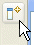
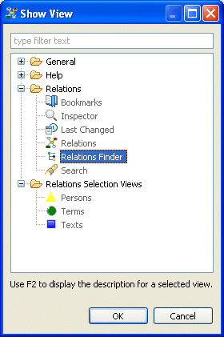
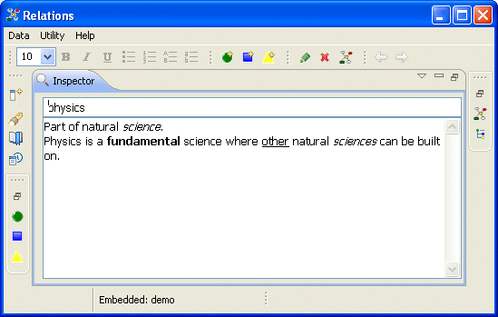

|  | You can activate a view by clicking on the Show View button and selecting Other... or by selecting Help > Show View > Other.... |
This will display a selection view of all available views.

The Relations application provides various views in the two categories Relations and Relations Selection Views. Most of them are activated by default. However, if you closed a view, you can open it any time this way.
After activating a view, you drag the view by its tab and drop it on any part in the application window to organize the application's appearance.
You can maximize a view for that it fills the whole application's window to make working with this view easier.
You can do this either by double clicking the view's tab or by pressing
Ctrl+M. Double clicking the tab again (or pressing Ctrl+M) will set the view back to its previous state.

Maximized inspector view